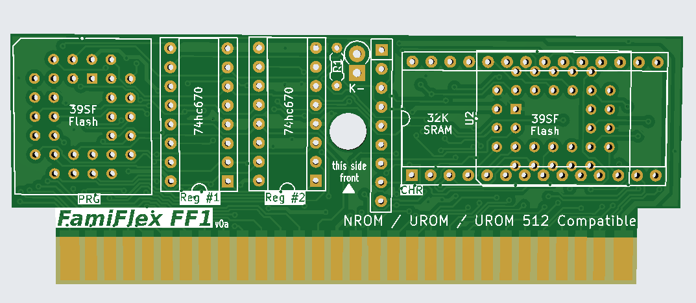
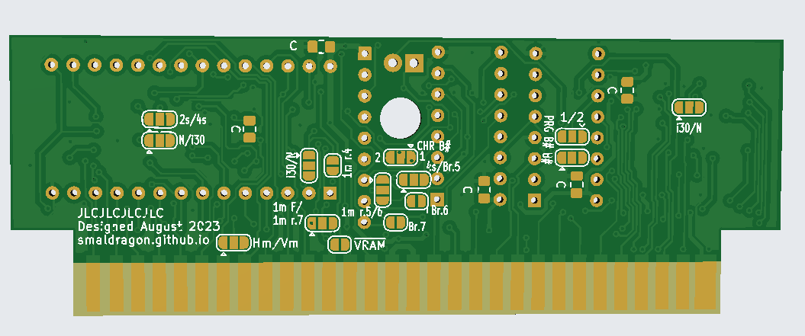

🦊 smal's blog
The FF1 (FamiFlex) Mapper!

NOTE: THIS IS A WIP PAGE FOR A WIP PROJECT, THE INFO HERE MAY NOT BE UP TO DATE OR ACCURATE
So, some time ago I bought an old famiclone, and eventually I wanted to give a shot at playing some homebrew games on it (and even maybe make my own), so out of boredom and a desire for learning came the FF1 mapper!
Its a mapper that makes use of 74670 4x4 register chips (as I had a bunch of them lying around), and that can be configured to emulate many of the "bus-conflict" mappers that are commonly used in the homebrew scene, including NROM, UNROM, AxROM and UNROM 512. As well as many other possible configurations (including some not really present in any documented mapper).
| MAPPER | n.ICs | PRG max(Kb) | PRG banking | CHR type | CHR max(Kb) | CHR banking | PRG RAM | Game Saves | Mirroring | Register |
|---|---|---|---|---|---|---|---|---|---|---|
| NROM (i000) | 2 | 32 | 32f | ROM | 8 | 8f | no | no | fixed V/H | - |
| UNROM (i002) | 4 | 256 | 16+16f | RAM | 8 | 8f | no | no | fixed V/H | ----.PPPP |
| AxROM (i007) | 4 | 128 | 32 | RAM | 8 | 8f | no | no | 1-screen | ---M.-PPP |
| BNROM (i034) | 4 | 128 | 32 | RAM | 8 | 8f | no | no | fixed V/H | ----.--PP |
| COLORDREAMS (i011) | ? | 128 | 32 | ROM | 128 | 8 | no | no | no | fixed V/H |
| UNROM 512 (i030) | 5-6 | 512 | 16+16f | RAM | 32 | 8 | no | yes (PRG FLASH) | fixed V/H or switch 1-screen or fixed 4-screen | MCCP.PPPP |
| FF1 | 2-4 | 512 | 32f or 32 or 16+16f or 16+16 | RAM/ROM | 32(RAM) or 128 (FLASH) | 8f or 8 or 4+4f or 4+4 | no | yes (CHR FLASH) | fixed V/H or switch 1-screen or fixed 4-screen | variable (see jumper setup) |
Theory of operation
The FF1 presents one or two registers accessible by writing to ROM (note: this is a bus conflict mapper, thus the region of ROM you write to must contain the same value you are writing). The register(s) can be either 4 or 8 bit, with each half of the byte being a separate `670 4x4 register.
These registers in turn control the memory bank mapping of PRG and CHR, as well as mirroring while using single screen mode.
Jumpers
FF1 uses a series of solder jumpers in the back of the board to customize it, these are where the flexibility part of the mapper comes in, as the board can be made to use a variety of different configurations:

Nametable Setup
The Famicom PPU is based around using 4 logic nametable screens, but it only contains enough internal VRAM to store 2 of them, an option exists to use cartridge RAM instead in order to enable the maximum 4 screens, and is supported by FF1:
- 2s/4s - Use 2 or 4 screens, must be set
- /VRAM - Enables the VRAM inside the Famicom, this should be bridged unless 4 screen mode is being used
Finally when using 2 screen mode we must settle on a mirroring mode to use in order to fill up the 4 logical nametable screens, in that case one (and only one!) of the following jumpers must be set
- Hm/Vm - Set mirroring to either fixed horizontal or vertical
- 1m/1m r.7 - Set scrolling to 1 screen, either fixed or set by bit 7
- 1m r.5/6 - Set scrolling to 1 screen, set by either bit 5 or 6
- 1m r.4 - Set scrolling to 1 screen, set by bit 4
1 screen mirror mode works by switching between 2 screens through the corresponding bit
Banking Setup
Register 1 stores bits 0 to 3 and Register 2 stores bits 4 to 7.
- N/i30 - This sets whether bit 4 is used for CHR (N) or for PRG (i30), the latter setting is used in the UNROM 512 mapper (iNES 030).
- B## - The number of banked regions to use. If set to 2, a second banking register will become available at the range $C000-$FFFF.
- PRG B## - The number of banked regions to use for PRG memory
- CHR B## - The number of banked regions to use for CHR memory
Finally we can decide which of the bits 5,6,7 are used for CHR banking:
- 4s/Br.5 - Use 4 mode or use bit 5
- Br.6 - Use bit 6
- Br.7 - Use bit 7
R1 and D1
These are odd components needed for when bit 4 is used for PRG mapping in a Mapper i30-like mode. D1 should be a standard 1n4 diode and R1 Should be a 4.7K resistor.
Example Configurations
NROM
32K PRG + 8K CHR
- CHR Rom
- No Register
- Set jumpers /VRAM, 2s, N
- Set Hm or Vm according to which mirroring type is used by the game.
AxROM
512K PRG (16x32K) + 8K CHRam
- CHR Ram
- Lo Registe + Hi Register
- Set jumpers /VRAM, 2s, N, B# 1, PRG B# 2,
1m.r4
UNROM
256K PRG (16x16K) + 8K CHRam
- CHR Ram
- Lo Register
- Set jumpers /VRAM, 2s, N, B# 1, PRG B# 1
- Set Hm or Vm according to which mirroring type is used by the game.
UNROM 512
512K PRG (32x16K) + 32K CHRam (4*8K)
- CHR Ram
- Lo Register + Hi Register
- D1 and R1
- Set jumpers /VRAM, 2s, i30, B# 1, PRG B# 1, CHR B# 1
- Set Hm or Vm according to which mirroring type is used by the game
FF1
A "Maxed-Out" setup for my own homebrew use.
512K PRG (16x16K(a) + 16x16K(b)) + 128K CHRom (16x4K(a) + 16x4K(b))
- CHR Rom
- Lo Register + Hi Register
- Set jumpers /VRAM, 2s, i30, B# 2, PRG B# 2, CHR B# 2, r.4 to r.7*
- Set Hm or Vm according to which mirroring type is used by the game.
Links
- github, containing the original KiCad files and gerbers.